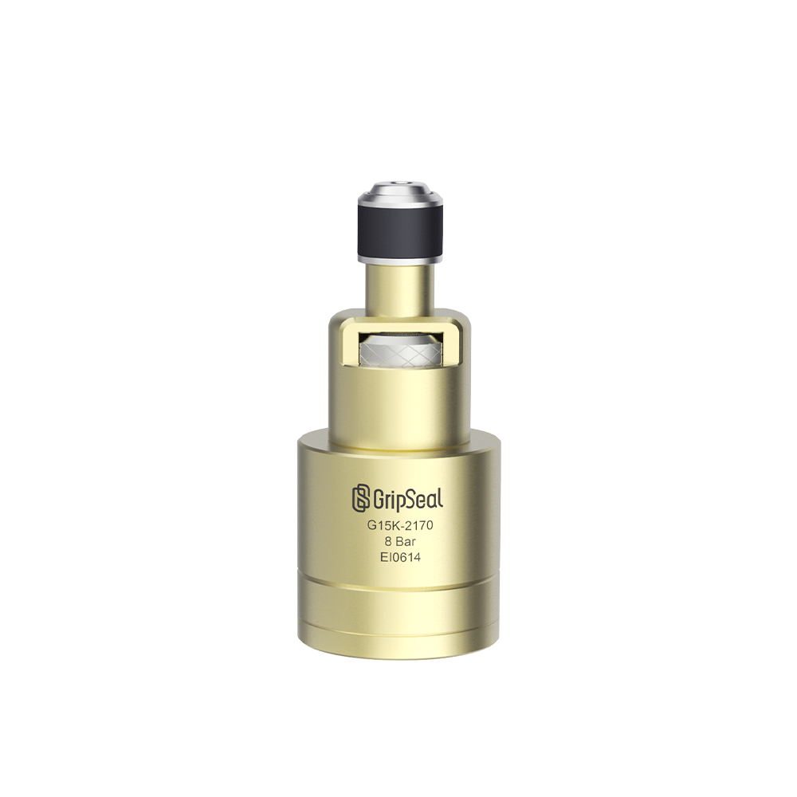

Series Shelf
Fuel Pipe Series Reserved Here
This shelf reserves the domestic-style category path. Each series can later open a model page with product details and selection tables.

G15
Reserved entry for automotive fuel pipe sealing and production leak-test connections.
Fuel PipeAutomotiveLeak Test
Reserve Series Detail
G15 Pro
Reserved upgraded route for higher cycle frequency or fixture integration.
Fuel LineFixturePro Route
Reserve Series Detail
G15K
Reserved slot for compact or special fuel pipe structures that need detailed review.
CompactFuel PipeSelection Table
Reserve Series Detail